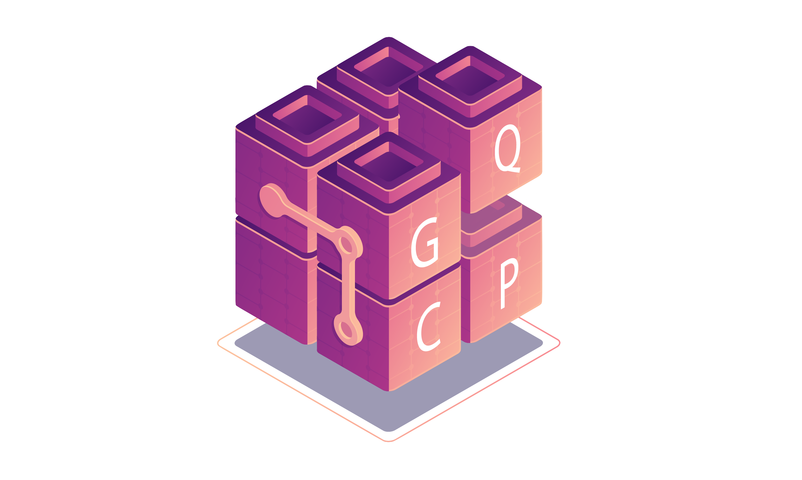

The Ghent Quantum Chemistry Package
Contents
The Ghent Quantum Chemistry Package#
Sustainable development & reproducible research#
At the Ghent Quantum Chemistry Group, GQCG for short, our activities are centered around electronic structure for molecules. We are trying to help create a community of quantum chemists that have a common mindset, suitable for (academic) research in the 21st century. We are focused on sustainable and reproducible research, which is why our software developments are all open-source. In order to support our research and development, GQCP saw its first light in 2017 and has been growing ever since.
GQCWhy?#

Conceptually, GQCP is like Lego. Much like our favorite toys, GQCP provides building blocks to experiment with. In just a handful lines of code, users can perform complex computations and developers can synthesize new and modify existing electronic structure methods. Curious? Try it out!
C++ and Python#
We use pybind11 to generate Python bindings for our C++ library. Using
gqcpyas a Python module, we can embrace Python’s present role as a data manipulating language. Gone are the days of providing input files or writing executables, withgqcpyand Jupyter notebooks you can naturally adapt a work flow that is both playful and systematic at the same time.GQCP is modern at its core. It is natively written in C++, so we have access to state-of-the-art software techniques and compilers.
The GQCP development team#
Here’s a list of the GQCG members that contributed to this project.